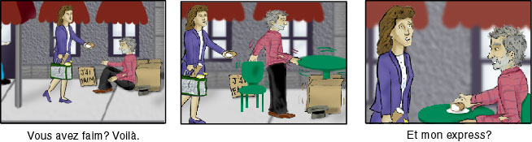

Préparation 4: À Table au Café
Langue
Introduction
Function
- Learning how to order lunch in a café
Pronunciation
- Closed o
Structure
- The verb avoir, to have
- Expressions with avoir
- Stressed pronouns
- -er verbs (first conjugation verbs)
- Articles and the gender of nouns
1. Conversation
Les trois copains arrivent au café.
Daniel
J'ai faim, moi.
Régine
Moi aussi. Et j'ai soif.
Paul
Voilà une table à la terrasse.
Daniel
Bon, et voilà le garçon.
Garçon
Bonjour, Messieurs, Dame. Vous désirez?
Daniel
Qu'est-ce que vous avez comme sandwichs?
Garçon
Jambon, saucisson, pâté, rillettes, fromage.
Paul
Pour moi, un sandwich au fromage et un café, s'il vous plaît.
Garçon
Et pour vous, Mademoiselle?
Régine
Une quiche. J'aime beaucoup la quiche.
Garçon
Et comme boisson?
Régine
Un thé
Daniel
Pour moi, un croque-monsieur et un citron
2. Un peu plus 1
Langue et Culture 1
Une table à la terrasse
The café, a characteristic feature of French life, is an institution that dates back to the 17th century. Café life developed as the taste for coffee spread from the Middle East to Europe. The oldest café in Paris, Le Procope , opened in 1686 and is now a restaurant. The typical French café has both outdoor (sidewalk) seating, la terrasse , and indoor seating, l’intérieur. People may also stand at the bar and have a drink. Cafés serve beverages, croissants, pastries, and light meals, such as sandwiches and quiche.
Cafés have played an important role in French history. More conducive to serious discussion than boisterous taverns, cafés became centers of political and intellectual ferment, and are credited by some writers as making the French Revolution of 1789 possible by providing its supporters with convenient meeting places to converse and plot.
In today’s France, the number of cafés is decreasing, perhaps in response to the pressures of modern life, which reduce the number of leisure hours that people have. The number of cafés in France has gone from 200,000 in 1960 to 57,000 in 1992, to an estimated 15,000 in 2020.
More interesting information about the history of coffee and cafés can be found in Uncommon Grounds: The History of Coffee and How It Transformed Our World, by Mark Pendergast, Basic Books, 1999.
Langue et Culture 2
Un sandwich et un citron pressé
The typical French sandwich is made on a long loaf of French bread called a baguette. The names of typical sandwiches served in cafés are given in the waiter’s reply in the Conversation. Rillettes is potted meat (pork or poultry). Pâté is goose liver ground into a spreadable paste. The croque-monsieur and the croque-madame are made on white bread slices that are similar to American sandwich bread.
French citron pressé is different from American lemonade. To make citron pressé , a waiter squeezes fresh lemon into a glass while the customer adds water and sugar.
3. Pronunciation Practice 1
Closed "o"
Closed o is a sound that is similar to closed é , which you practiced in Préparation 3. In producing a closed é , you keep your tongue high and forward in the mouth. For closed o, the tongue is high but arched and back in the mouth.
The English sound that most resembles the French closed o is the ow of row. In the English sound, however, the position of the lips and tongue shifts as the sound is made, producing a diphthong. The sound starts out like the au of caught (or, for some English-speakers, like the u of but) and finishes as the oo of food. The French closed o is not a diphthong. The position of the tongue, mouth, and lips does not change during the production of the sound, and the vowel is short, tense, and uniform in sound.
Listen to the following English words containing the diphthong represented by ow, followed by French words containing closed o. Note that the French closed o can be spelled in several different ways.
Now pronounce the following words after the speaker, paying special attention to the French closed o.
La Structure de la Langue 1
The Verb “Avoir”
Learn the forms of avoir (to have) with the subject pronouns that accompany them.
The pronoun je , which means I, becomes j’ before a vowel: j’ai. This dropping of mute e before a vowel is called élision in French.
Be sure to observe the sound distinction between ils ont, elles ont (they have), and ils sont and elles sont (they are). In ils ont, elles ont, the final s of the pronoun is linked with a z sound.
4. Oral Exercises 1-2
Oral Exercise 1: Avoir
h4Say that the following people have Swiss francs.
Modèle
Oral Exercise 2: Avoir
Say that the following people have a lot of work.
Modèle
Commençons.
5. Writing Exercise 1
Writing Exercise 1
Le verbe "avoir"
Complete the following sentences with the correct form of avoir (to have). Please read through all eight sentences before you begin. Click on the underlines to see the answers.
- Qu'est-ce qu'ils
comme desserts dans ce café?
_____
ont - Tu
des euros?
_____
as - Non, mais j'
ma carte de crédit.
_____
ai - Nous
beaucoup de travail en ce moment.
_____
avons - Vous aussi, vous
beaucoup de travail?
_____
avez - Mon copain
cours maintenant.
_____
a - J'
une copine à Paris.
_____
ai - Régine et sa copine
seulement des francs suisses.
_____
ont
La Structure de la Langue 2
Expressions with “Avoir”
There are some common expressions in which French uses avoir + noun where English uses to be + adjective. Two examples appear in the conversation:
Here are some common expressions with avoir :
6. Oral Exercises 3-5
Oral Exercise 3: Expressions with "Avoir"
Say that the following people are lucky because they have a credit card.
Modèle
Jean-Luc a une carte de crédit.
Il a de la chance.
Commençons
Oral Exercise 4: Expressions with "Avoir"
Say that the following people are cold.
Modèle
Ton copain a chaud?
Non, il a froid.
Commençons
Oral Exercise 5: Expressions with "Avoir"
Say that the following people are not thirsty, but hungry.
Modèle
Marguerite a soif?
Non, mais elle a faim.
Commençons
La Structure de la Langue 3
Stressed Pronouns
In addition to the subject pronouns, French has another set of pronouns called stressed pronouns. Here are the stressed pronouns with their corresponding subject pronouns:
Note that for elle, nous, vous, and elles, the stressed pronoun is the same as the subject pronoun.
Usage of Stressed Pronouns
Stressed pronouns are required in certain constructions.
They are used in isolation; in other words, they are used as one-word responses or after prepositions.
Stressed pronouns are used to contrast one subject pronoun with another. In English, we rely on our intonation to indicate contrast. In French, however, the use of a stressed pronoun provides contrast or adds emphasis to the subject pronoun.
7. Oral Exercises 6-7
Oral Exercise 6: Stressed Pronouns
Using a stressed pronoun, say that the following people also have a lot of work.
Modèle
Commençons.
Oral Exercise 7: Stressed Pronouns
Using a stressed pronoun, say what the following people will have.
Modèle
Commençons.
8. Writing Exercise 2
Complete the responses to each question. Assume that the person asked about is from the same place, of the same nationality, or shares the same status as the other people mentioned in each sentence. In some cases, you will have to change the gender of adjectives or nouns. Pay special attention to adjectives that describe nationality.
Click to see the answers.
Modèle
- Christine est canadienne. Et Jacques? Jacques aussi est canadien.
-
Marc et Hervé sont au restaurant. Et toi et Hélène? Moi et
Hélène, nous aussi, nous .
(show)
sommes au restaurant - Agnès est française. Et toi, Michel? Moi aussi, je .
(show)
suis français - Jean-Luc est belge. Et Thérèse et Sylvie? Elles aussi, elles .
(show)
sont belges - Ton copain est au lycée. Et ta copine? Elle aussi, elle .
(show)
est au lycée - Paul est ton copain. Et Stéphane? Stéphane aussi .
(show)
est mon copain - Jacques est étudiant. Et Valérie? Elle aussi, elle .
(show)
est étudiante
La Structure de la Langue 4
Verbs Ending in “-er” (1)
French verbs are divided into groups called “conjugations.” Each conjugation has its own set of endings for the subject pronouns. The unconjugated verb is called the infinitive. Verbs whose infinitives end in -er are called “- er verbs” and constitute the largest group of verbs.
The infinitive is a form of the verb that does not specify either the person performing the action or the time of the action. English infinitives consist of the word to plus the verb stem: to prepare (préparer ).
Listen and repeat the spoken forms of préparer. How many distinct spoken forms are there? Which forms sound alike? Study the spelling of these forms and repeat them several times after the speaker. How many distinct written forms are there?
La Structure de la Langue 5
Verbs Ending in “-er” (2)
In traditional grammatical terminology, the different forms of the verb have names:
| Singular | Plural | |
|---|---|---|
| First Person | je prépare | nous préparons |
| Second Person | tu prépares | vous préparez |
| Third Person | il/elle prépare | ils/elles préparent |
Thus, the je form is called “first person singular.” The vous form is called “second person plural,” and so on.
- Which form is the first person plural?
- What name would you give to the il/elle form?
- What name would you give to the tu form?
Answers
- The first person plural is the nous form of the verb.
- The il/elle form of the verb is called first person singular.
- The tu form is called second person singular.
La Structure de la Langue 6
Verbs Ending in “-er” (3)
Note the following forms:
What do they have in common?
9. Oral Exercises 8-10
Oral Exercise 8: Articles and Gender of Nouns
Say that the following people like desserts a lot.
Modèle
Commençons.
Oral Exercise 9: Articles and Gender of Nouns
Say that the following people always order ice cream.
Modèle
Commençons.
Oral Exercise 10: Conjugating "-er" Verbs
Say where these people have lunch by constructing a sentence using the verb déjeuner (to have lunch).
Modèle
Commençons.
10. Writing Exercise 3
Writing Exercise 3
Say that the person(s) mentioned in parentheses is of the same nationality.
| Modèle |
| Jacques est espagnol. |
| (Philippe) |
| Philippe aussi est espagnol. |
Luigi est italien. (Laura)________________.
Marc est français. (Élisabeth)____________.
Hervé et Jean sont canadiens. (Nicole et Valérie)_____________.
Paul et David sont américains. (Julia)______________.
Marie et Claire sont africaines.(Charles et Thomas)___________.
Jane et Sarah sont anglaises. (Clifford)___________.
Show Answers
Answers
Laura aussi est italienne.
Élisabeth aussi est française.
Nicole et Valérie aussi sont canadiennes.
Julia aussi est américaine.
Charles et Thomas aussi sont africains.
Clifford aussi est anglais.
La Structure de la Langue 7
Determiners
Which words below can be used to complete “It’s ___ apple?
- slowly
- an
- his
- bread
- this
- the
- run
Show Answers
an, his, this, the
These words are called determiners.
In English, the indefinite article (a, an) and the definite article (the) belong to a class of words called determiners. Determiners precede nouns and limit or determine what the nouns refer to. In French, for example, when une is placed before table , it implies that the speaker is introducing table into the conversation. La table means that the table has already been introduced into the conversation, and that both the speaker and the listener are aware of it.
Determiners: Nouns
A noun is a word that can appear after the words the and a (an), and that can function as the subject or object of a verb. In the sentence The boy eats a peach, the words boy and peach are nouns because they follow the and a, respectively, and because boy is the subject of eats, while peach is the direct object.
Which of the following words are nouns?
- man
- sing
- restaurant
- my
- enter
- tree
- liberty
Show Answer
man, restaurant, tree, liberty
Note that the indefinite articles un and une may have a specialized meaning when ordering food. They can signify a standard restaurant serving of (food or drink). Thus, un café means a cup of coffee and une quiche means a serving of quiche.
La Structure de la Langue 8
Gender In French
In French, there is no simple way to tell whether a noun is masculine or feminine. Therefore, it is very important to learn the article when you learn the noun. The vocabulary lists of each Préparation will be useful in checking gender.
La Structure de la Langue 9
The Definite Articles
The definite article in English is the. The French definite articles change their form according to the gender of the noun. The definite article for un nouns (masculine nouns) is le. The definite article for une nouns (feminine nouns) is la. Here is a list of some nouns you have learned, classed by gender. Repeat each of them after the speaker, paying careful attention to the pronunciation of the definite articles le and la.
Note that both le and la become l’ before nouns that begin with a vowel. This is another example of élision.
11. Oral Exercises 11-14
Oral Exercise 11: Articles
Order different sandwiches in a café according to each cue.
Modèle
Commençons.
Oral Exercise 12: Articles
Order different kinds of ice cream and tarts in a café according to each cue.
Modèle
Commençons.
Oral Exercise 13: Voilà
Point these things out using voilà .
Modèle
Commençons.
Oral Exercise 14: Meaning Check
Give the French for each of the following phrases.
Modèle
Commençons.
* * * Pick up here next time * * *
12. Writing Exercise 4
Writing Exercise 4
Complete these sentences with the missing indefinite articles (either un or une ).
Voilà _____ café.
Voilà _____ table.
Pour moi, _____ glace.
_____ demi pour monsieur.
Vous désirez _____ croissant?
Vous désirez _____ tartine?
_____ sandwich au jambon pour mademoiselle.
Pour moi, _____ quiche.
Show Answers
Answers
un
une
une
un
un
une
un
une
13. Writing Exercise 5
Writing Exercise 5
Complete these sentences with the missing definite articles (either le, la, or l' ).
Voilà _____ garçon.
Une glace à _____ fraise.
Voilà _____ sandwich.
_____ quiche pour madame, et _____ sandwich
au saucisson pour monsieur.
_____ glace à _____ vanille? Pour moi.
Voilà _____ serveuse.
Show Answers
Answers
le
la
le
La, le
La, la
la
14. Writing Exercise 6
Writing Exercise 6
Complete these sentences with the missing form of à and the definite article.
_____ café
une glace _____ fraise
un sandwich _____ pâté
_____ table
_____ terrasse
Show Answers
Answers
au
à la
au
à la
à la
15. Writing Exercise 7
Writing Exercise 7
Use the indefinite article to complete these sentences. Point out the various foods.
Voilà _____ chocolat.
Voilà _____ quiche.
Voilà _____ jambon.
Voilà _____ glace.
Voilà _____ pâté.
Voilà _____ crème.
Show Answers
Answers
le
la
le
la
le
le
16. Writing Exercise 8
Writing Exercise 8
Meaning Check 1
Give the English for the following sentences.
La tarte aux fraises est pour Madame?
Et le crème, c'est pour qui?
C'est pour vous, la glace à la pistache, monsieur?
Answers
17. Writing Exercise 9
Writing Exercise 9
Meaning Check 2
Write the French for the following phrases and sentences.
I'm sorry.
There's the waitress.
coffee ice cream
Right away, sir.
Whom is the grilled cheese sandwich for?
It's for me.
I'll have a cup of hot chocolate, please.
The orange juice is for the young lady.
What would you like to have? (said by the waiter to his clients)
What about my quiche?
Show Answers
Answers
Excusez-moi.
Voilà la serveuse.
une glace au café
Tout de suite, Monsieur.
C’est pour qui le croque-monsieur?
C’est pour moi.
Pour moi, un chocolat, s’il vous plaît.
Le jus d’orange est pour mademoiselle.
Vous désirez?
Et ma quiche?
18. Writing Exercise 10
Writing Exercise 10
Can you give the English equivalent for these new phrases and sentences based on what you have learned?
a ham quiche
tea with lemon
orange ice cream
lemon ice cream
Is the sandwich for you?
Show Answers
Answers
une quiche au jambon
un thé au citron
une glace à l’orange
une glace au citron
C’est pour vous, le sandwich?
19. Writing Exercise 11
Writing Exercise 11
Rédaction (Composition)
Write a conversation that takes place between two people ordering food at a café. The conversation should consist of at least six exchanges.
Activite 1
Échange d’idées: exercice de communication
Act out café scenes in groups of two or three. Have “the waiter” suggest menu items too, such as: Pour vous, un sandwich?
16. Lecture
Lecture

17. Analyse
Analyse
Conversation 1 (4.1 through 4.14)
| 4.1 | les | the (before a plural noun) |
| trois | three | |
| les trois copains | the three friends | |
| arrivent | arrive | |
| Les trois copains arrivent au café. | The three friends arrive at the café. |
| 4.2 | j’ai | I have |
| faim | hunger | |
| J’ai faim. | I’m hungry. | |
| moi | I, me (adds emphasis) | |
| J’ai faim, moi. | I’m hungry. |
| 4.3 | soif | thirst |
| J’ai soif. | I’m thirsty. | |
| Moi aussi. Et j’ai soif. | Me too. And I’m thirsty. |
| 4.4 | la terrasse | sidewalk seating area of a café |
| à la terrasse | in the sidewalk seating area | |
| la table | table | |
| une table | a table | |
| une table à la terrasse | an outdoor table | |
| Voilà une table à la terrasse. | There’s an outdoor table. |
| 4.5 | bon | good |
| le garçon | waiter (literally, boy) | |
| Bon, et voilà le garçon. | Good, and there’s the waiter. |
| 4.6 | Vous désirez? | What would you like? (literally: you want?) |
| Dames, Messieurs | ladies and gentlemen | |
| Bonjour, Messieurs Dames. Vous désirez? | Hello, what would you like? |
| 4.7 | un sandwich | a sandwich |
| des sandwichs | sandwiches | |
| vous avez | you have | |
| Qu’est-ce que vous avez comme sandwichs? | What kind of sandwiches do you have? |
| 4.8 | le fromage | cheese |
| les rillettes | potted pork or goose meat | |
| le pâté | goose liver paste | |
| le saucisson | salami | |
| le jambon | ham | |
| Jambon, saucisson, pâté, rillettes, fromage. | Ham, salami, pâté, rillettes, cheese. |
| 4.9 | pour | for |
| moi | me (after prepositions such as pour) | |
| un sandwich | sandwich | |
| le fromage | cheese | |
| à | made with (labels main ingredient) | |
| au fromage | cheese (as an adjective) | |
| un sandwich au fromage | a cheese sandwich | |
| un café | a (cup of) coffee | |
| Pour moi, un sandwich au fromage et un café, s’il vous plaît. | I’ll have (= for me) a cheese sandwich and coffee please. |
| 4.10 | et | what about, how about |
| vous | you | |
| Et pour vous, Mademoiselle? | And what about you, Miss? |
| 4.11 | j’aime | I like |
| beaucoup | a lot | |
| la quiche | quiche(egg, cheese, and ham pie) | |
| J’aime beaucoup la quiche. | I like quiche a lot. | |
| une quiche | a serving of quiche or an individual quiche | |
| Une quiche. J’aime beaucoup la quiche. | Quiche. I like quiche a lot. |
| 4.12 | boisson | drink |
| Et comme boisson? | And what will you have to drink? |
| 4.13 | le thé | tea |
| Un thé. | A (cup of) tea . |
| 4.14 | pressé | squeezed |
| citron | lemon | |
| un citron pressé | lemonade | |
| croque-monsieur | grilled cheese sandwich | |
| Pour moi, un croque-monsieur et un citron pressé. | I’ll have a grilled cheese sandwich and a lemonade. |